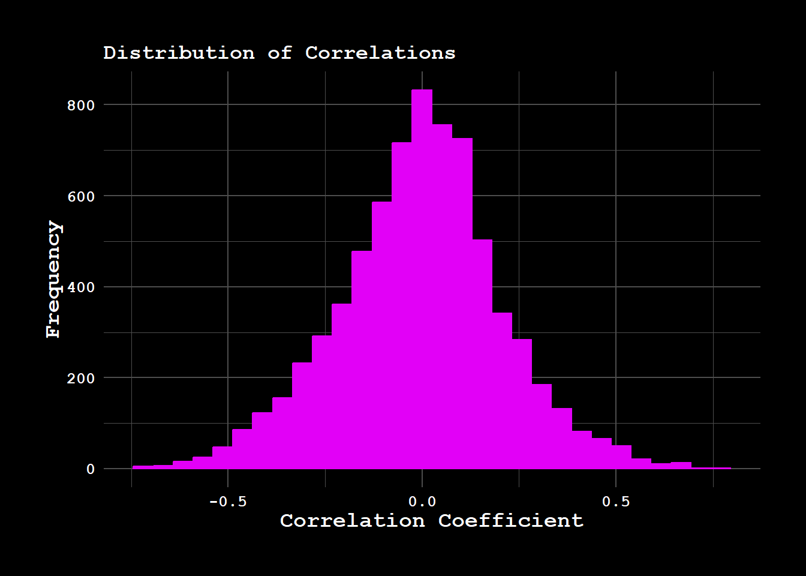
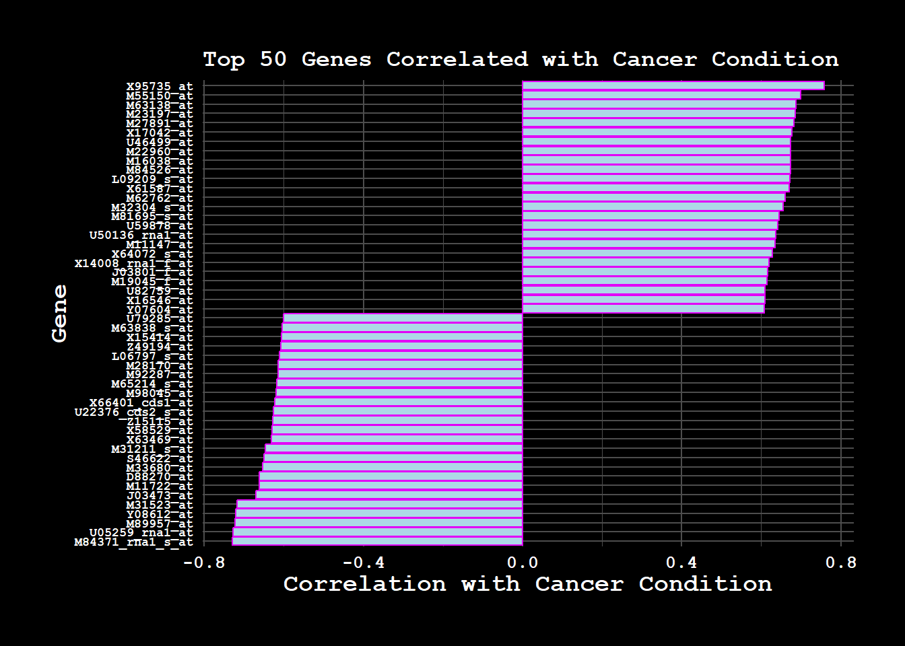
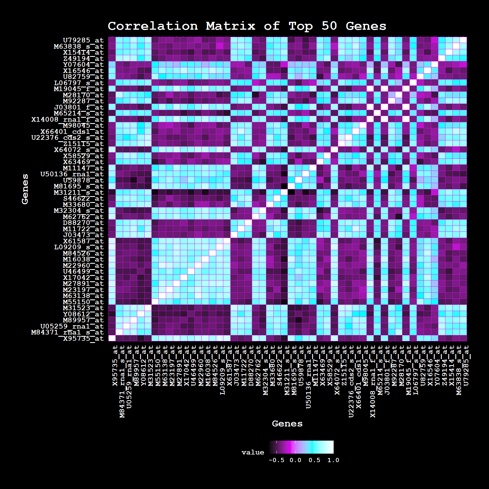
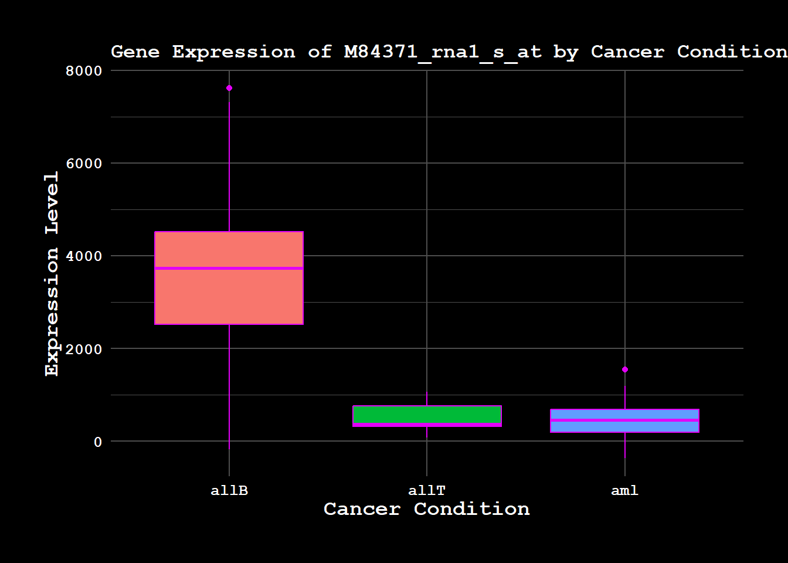
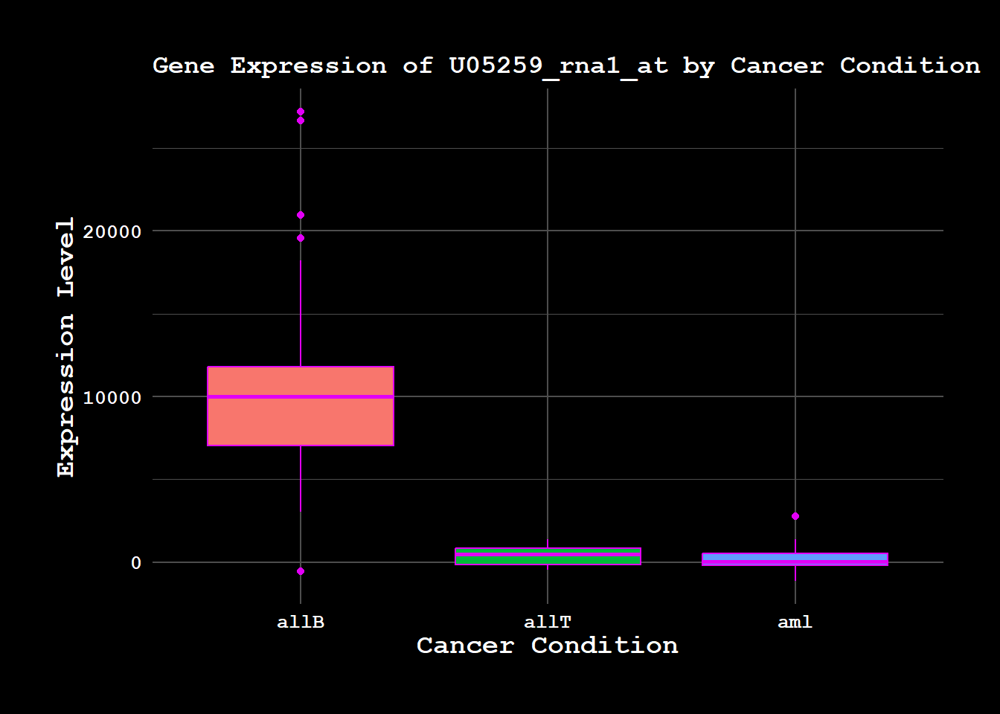
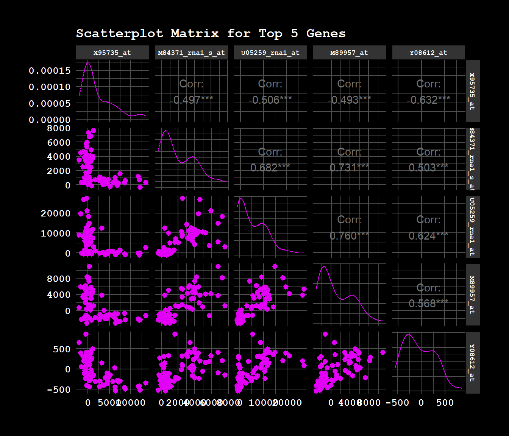

3.1 Selection of the 50 Most Important Genes Based on Correlation with Cancer Variables
In this section, we will begin by selecting the 50 most important genes based on their correlation with the cancer variable, which indicates the condition the patient is suffering from. This selection is made for the purpose of better understanding the dataset, as we have a large number of genes (~7000 genes), and we want to focus on the most relevant ones at this stage.
We will calculate the correlation between each gene’s expression values and the cancer condition, then select the top 50 genes with the highest correlations. This will allow us to narrow down the dataset for further exploration while ensuring we capture the most significant gene-cancer relationships.
3.1.1 Data Preparation
First, let’s load the necessary libraries and inspect the structure of the dataset.
The following objects are masked from 'package:stats':
filter, lag
The following objects are masked from 'package:base':
intersect, setdiff, setequal, union
Code
library(tidyr)library(ggplot2)library(cyberpunk)
3.1.2 Extracting Gene Expression and Cancer Condition
The cancer condition is in the sixth column of the dataset, and the gene expression data starts from the 7th column onward. We will separate the cancer variable from the gene expression data for further analysis.
Now, we will calculate the correlation between each gene’s expression and the cancer condition. To do this, we will assume that the cancer variable is numeric (if it’s categorical, we may need to encode it before correlation). We will compute the Pearson correlation coefficient between each gene and the cancer variable.
ggplot(correlation_df, aes(x = Correlation)) +geom_histogram(bins =30) +labs(title ="Distribution of Correlations with Cancer Condition",x ="Correlation Coefficient",y ="Frequency") +theme_cpunk(title.size =13)

3.1.4 Visualizing the Top 50 Genes
To better understand the relationships between the top 50 genes and the cancer condition, we can create a bar plot to visualize the correlations. This plot will help us quickly identify the genes with the strongest relationships with the cancer condition.
Code
ggplot(top_50_genes, aes(x =reorder(Gene, Correlation), y = Correlation)) +geom_bar(stat ="identity", fill ="lightblue") +coord_flip() +labs(title ="Top 50 Genes Correlated with Cancer Condition",x ="Gene",y ="Correlation with Cancer Condition") +theme_cpunk(title.size =13) +theme(axis.text.y =element_text(size =7))

3.1.5 Heatmap of Gene Expression for Top 50 Genes
To observe patterns in gene expression, we create a heatmap of the expression levels for the top 50 genes across patients.
Warning: package 'pheatmap' was built under R version 4.4.2
Code
pheatmap(top_50_gene_data,scale ="row",cluster_rows =TRUE,cluster_cols =TRUE,main ="Heatmap of Top 50 Gene Expression",show_rownames =FALSE,show_colnames =FALSE,color =colorRampPalette(c("#000000", "#E200F7", "#00FFFF", "#FFFFFF"))(100))
3.1.6 Correlation Matrix for Top 50 Genes
Next, we compute and visualize a correlation matrix among the top 50 genes to identify any strong relationships between them.
Code
library(reshape2)
Attaching package: 'reshape2'
The following object is masked from 'package:tidyr':
smiths
Code
# Create the correlation matrixgene_corr_matrix <-cor(top_50_gene_data)# Reshape the correlation matrix into long format for ggplotgene_corr_matrix_melted <-melt(gene_corr_matrix)# Plot the heatmap using ggplot2 with cyberpunk themeggplot(gene_corr_matrix_melted, aes(Var1, Var2, fill = value)) +geom_tile() +# Creates the heatmap tilesscale_fill_gradientn(colors =c("#000000", "#E200F7", "#00FFFF", "#FFFFFF")) +# Set cyberpunk colorstheme_cpunk() +# Use the cyberpunk themelabs(title ="Correlation Matrix of Top 50 Genes", x ="Genes", y ="Genes") +theme(axis.text.x =element_text(angle =90, hjust =1))

Pairwise scatterplots for the top 5 genes
Code
library(GGally)
Registered S3 method overwritten by 'GGally':
method from
+.gg ggplot2
Code
ggpairs(top_50_gene_data[, 1:5], title ="Scatterplot Matrix for Top 5 Genes") +theme_cpunk(title.size =13) +theme(strip.text =element_text(size =7))
3.1.7 Gene Expression Boxplots by Cancer Condition
Finally, we examine how the expression levels of selected highly correlated genes vary across cancer conditions.
Code
selected_genes <-head(top_50_genes$Gene, 3)cancer_condition_factor <-as.factor(cancer_condition)gene_boxplots <-lapply(selected_genes, function(gene) {ggplot(data =data.frame(Expression = gene_expression[[gene]], Cancer = cancer_condition_factor), aes(x = Cancer, y = Expression, fill = Cancer)) +geom_boxplot() +theme_cpunk(title.size =13) +labs(title =paste("Gene Expression of", gene, "by Cancer Condition"),x ="Cancer Condition",y ="Expression Level") +theme(legend.position ="none")})print(gene_boxplots[[1]])
Code
print(gene_boxplots[[2]])

Code
print(gene_boxplots[[3]])

3.2 Clustering to visualise te=he variation in the dataset
3.2.1 DBSCAN
Below is the R code that demonstrates how to apply DBSCAN clustering. The idea is to treat gene expression levels as features for clustering, and then explore how samples (patients) group together based on their expression profiles.
Code
golub <-read.csv("data/golub2.csv")# Encode the cancer columngolub$cancer <-as.factor(golub$cancer)golub$cancer_condition_numeric <-as.numeric(golub$cancer)# Select only numeric columns, including the encoded cancer_condition_numericnumeric_data <- golub[, sapply(golub, is.numeric)]# Perform DBSCAN clusteringlibrary(dbscan)
Warning: package 'dbscan' was built under R version 4.4.2
Attaching package: 'dbscan'
The following object is masked from 'package:stats':
as.dendrogram
Code
# Apply DBSCAN clustering to the numeric data, excluding the original categorical variablesdbscan_result <-dbscan(numeric_data, eps =0.01, minPts =2)# Add the cluster labels to the data framegolub$cluster <-as.factor(dbscan_result$cluster)
3.2.1.1 Visualize the clustering (using PCA for dimensionality reduction)
Code
pca_result <-prcomp(numeric_data, scale. =TRUE)# Scatter plot of the first two principal components colored by clustergolub$PC1 <- pca_result$x[, 1]golub$PC2 <- pca_result$x[, 2]ggplot(golub, aes(x = PC1, y = PC2, color = cluster)) +geom_point(size =3, shape =16) +labs(title ="DBSCAN Clustering (PCA view)", x ="Principal Component 1", y ="Principal Component 2") +theme_cpunk()
Code
table(dbscan_result$cluster)
0
72
Code
explained_variance <-data.frame(PC =1:length(pca_result$sdev), Variance = pca_result$sdev^2/sum(pca_result$sdev^2))ggplot(explained_variance, aes(x = PC, y = Variance)) +geom_bar(stat ="identity", fill ="palegreen") +labs(title ="Scree Plot",x ="Principal Component",y ="Proportion of Variance Explained") +theme_cpunk()

DBSCAN is not able to identify different clusters. we will now apply a different clustering to technique to see if the samples can be easily separated.
3.2.2 Heirarchical Clustering
Code
golub <-read.csv("data/golub2.csv")# Encode the cancer columngolub$cancer <-as.factor(golub$cancer)golub$cancer_condition_numeric <-as.numeric(golub$cancer)# Select only numeric columns, including the encoded cancer_condition_numericnumeric_data <- golub[, sapply(golub, is.numeric)]# Perform Hierarchical Clustering# Scale the data before performing hierarchical clusteringscaled_data <-scale(numeric_data)# Calculate the distance matrix (Euclidean distance)dist_matrix <-dist(scaled_data, method ="euclidean")# Perform Hierarchical Clustering using the Ward.D2 method (minimizes variance)hc_result <-hclust(dist_matrix, method ="ward.D2")# Cut the dendrogram into a specified number of clusters (for example, 3 clusters)golub$cluster <-as.factor(cutree(hc_result, k =3))
3.2.2.1 Visualize the clustering (using PCA for dimensionality reduction)
Code
pca_result <-prcomp(scaled_data, scale. =TRUE)# Scatter plot of the first two principal components colored by clustergolub$PC1 <- pca_result$x[, 1]golub$PC2 <- pca_result$x[, 2]ggplot(golub, aes(x = PC1, y = PC2, color = cluster)) +geom_point(aes(shape = cancer)) +labs(title ="Hierarchical Clustering (PCA view)", x ="Principal Component 1", y ="Principal Component 2") +theme_cpunk() +scale_shape_manual(values =c(16, 17, 18))
Code
# Display the cluster sizestable(golub$cluster)
1 2 3
38 25 9
Code
explained_variance <-data.frame(PC =1:length(pca_result$sdev), Variance = pca_result$sdev^2/sum(pca_result$sdev^2))ggplot(explained_variance, aes(x = PC, y = Variance)) +geom_bar(stat ="identity", fill ="palegreen") +labs(title ="Scree Plot",x ="Principal Component",y ="Proportion of Variance Explained") +theme_cpunk()
3.2.3 Clustering Challenges in Gene Expression Data
In this analysis, we used two methods to group gene expression data from cancer patients based on their genetic features. The goal was to see if we could identify patterns that could help us better understand the different types of cancer. The methods we tried were DBSCAN (Density-Based Clustering) and Hierarchical Clustering. Despite experimenting with different settings, neither method gave us useful results. Below is a summary of what we tried and the challenges we encountered:
3.2.3.1 DBSCAN (Density-Based Clustering)
DBSCAN is a technique that groups data points that are close to each other in dense areas, while treating points in sparse areas as “noise” or outliers. We tested different settings to see if we could find the best way to cluster the data.
3.2.3.1.1 Challenges:
Sensitivity to Parameters: The method depends on two main settings: the distance between points (called eps) and the minimum number of points required to form a cluster (called minPts). When we set the distance too small, most of the points were treated as outliers and were not clustered at all. When we increased the distance, the method still couldn’t find meaningful groups.
No Clear Patterns: Even after adjusting the settings, the algorithm did not group the data in a way that made sense, and the results didn’t align well with the known cancer types.
3.2.3.2 Hierarchical Clustering
Hierarchical clustering works by grouping data points into clusters that are increasingly merged together. We used this method to see if it could form meaningful groups based on the gene data. The method also involves cutting the tree of clusters at a specific point to decide how many groups we want.
Ineffective Grouping: Even after specifying the number of clusters (e.g., 2 or 3), the resulting groups didn’t clearly separate the data. The clusters that were formed were not distinct, and they didn’t align with the actual cancer types.
Sensitivity to Settings: This method also depends on a setting called a “threshold” that decides where to cut the tree. Changing this threshold led to different results, but none of the clusters formed were meaningful.